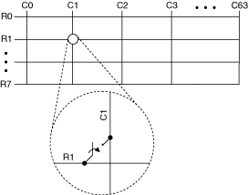
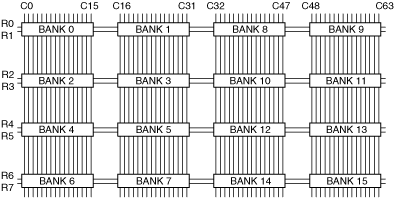
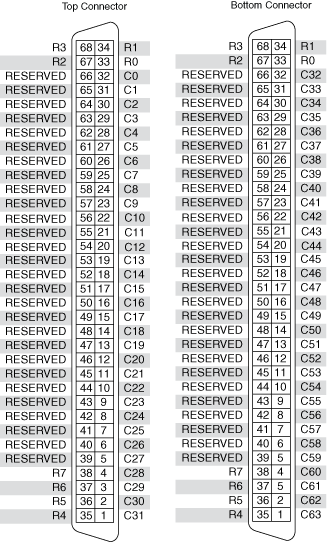

The NI TB-2650 terminal block creates a 1-wire 8×64 matrix topology with the NI PXI/PXIe-2531 (NI 2531). The following figure represents the NI 2531 in the 1-wire 8×64 matrix topology.

Both the scanning command, r1->c1;, and the immediate operation, niSwitch Connect Channels VI or the niSwitch_Connect function with parameters r1 and c1, result in the following connection:
signal connected to R1 is routed to C1
The NI TB-2650 terminal block connects banks of the NI 2531 to create the 1-wire 8×64 matrix topology.
The following figure illustrates how the native banks of the NI 2531 connect using the NI TB-2650 to create the 1-wire 8×64 matrix topology.

The following figure identifies the pins for the NI TB-2650 connectors.

The following figure identifies the pins for the NI 2531.